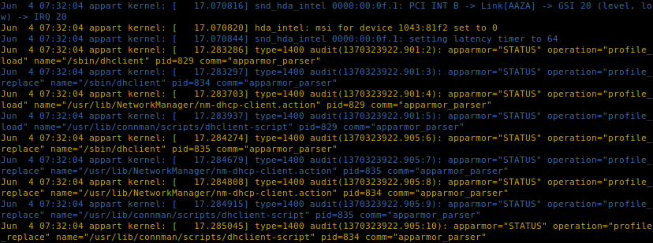
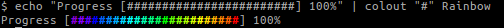
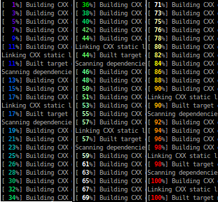
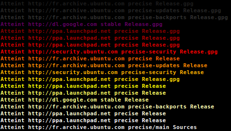

Colout
Color Up Arbitrary Command Output
Project maintained by nojhan Hosted on GitHub Pages — Theme by mattgraham
colout
Introduction
colout is a simple command to add colors to a text stream in your terminal.
The colout command line interface has been carefully designed to be simple. Basically, you will call it like: <text
stream> | colout <pattern to color> [color [style]]
colout has the ability to use 8 colors mode, 256 colors mode, colormaps, themes and source code syntax coloring. Patterns are regular expressions.
You can think of colout as an alternative to grep --color which will preserve the surrounding context, whith more
powerful coloring capabilites.
Useful examples
Basic coloring
In the most simple use, you just have to call colout word to highlight what you want to spot in a text stream. This is
particularly useful when examining logs.
Color every occurence of the word "fail" in bold red, in the boot log:
tail /var/log/boot.log | colout fail

Using regular expressions, you can highlight anything you want in a text stream.
Color every line containing the word "fail" in bold red, in the boot log:
tail /var/log/boot.log | colout "^.*fail.*$" red bold

Color in blue the user name of the ps output that have been greped:
ps aux | grep firefox | colout "^\w+\s" blue

Multiple colors
Using groups in the regular expressions, you can highlight several matchs in different colors.
Highlight the different parts of the permissions of files in your home directories, that are rwx for user and group,
but r-x for others:
ls -l ~ | colout "^(d*)-*(rwx)(rwx)(r-x)" blue,red,yellow,green

Color maps
Using colormaps, you can change the colors for each lines
Predefined colormaps are particularly useful for reading logs that have long lines that are wrapped.
tail /var/log/kern.log | colout "^.*$" rainbow

But you can also create your own colormap, using the -c switch, for example to alternate two colors:
tail /var/log/kern.log | colout -c "^.*$" blue,yellow normal

If you prefer a rainbow with more colors, just use an upper-case R. For example to color a progress bar:
echo "Progress [########################] 100%" | colout "#" Rainbow

If you want even more colors, you can highlight each line of your log with a random one among the 256 ANSI colors:
tail /var/log/dmesg | colout "^.*$" Random

You can color numbers according to their value on a linear scale:
cmake .. && make 2>&1 | colout --scale 0,100 "\[(.*)%\]" scale

You can even fill your screen with esoteric disco characters (not that useful, but fun):
cat /dev/urandom | colout "." Random

Palettes
You can load extern palettes as colormaps. colout supports the GIMP Palette format (*.gpl, used by GIMP and inkscape, for instance) and will translate them from their RGB values to their nearest ANSI colors (which may thus contains fewer colors than the orginal RGB palette).
sudo apt-get update | colout -P /usr/share/gimp/2.0/palettes/ "^.*$" Firecode

Source code
You can use colout as a basic proxy to the pygments library, if you want to highlight a source code.
For example, let say you want to have a quick look at a source file, without being bothered by comments and empty lines:
tail colout.py | grep -v "#" | grep -v "^\s*$" | colout -s Python monokai

But even more interesting, you can highlight the syntax of the matching parts of your text stream, which is useful for spotting code in a log.
For example, color the code parts in the output of g++ (they come inside single quotes):
make 2>&1 | colout "'.*'" Cpp vim

Themes
colout comes with a set of handy shortcuts for coloring common outputs.
For example, if you often build your software with cmake but find its coloring scheme a bit boring, you can use the
following shortcut:
make 2>&1 | colout -t cmake

You can, of course, combine several calls to colout using pipes:
make 2>&1 | colout -t cmake | colout -t g++

Tips
To be able to use the syntax highlighting, you should install the python-pygments library.
colout -r will give you the lists of available colors, colormaps, themes and supported programming languages.
Colormaps and source code syntax highlighting most often comes in 8 or 256 colors mode. Use a lower case first letter for the 8 colors mode and an upper case first one for the 256 colors.
The 8 colors mode syntax highlighting only comes in two styles: light and dark. If you want more fancy styles, you should use 256 colors mode, and thus upper case the first letter of the language name, or else the style is ignored.
You can leave simple words without quotes, but it is better to put the regexp in quotes to avoid escaping special characters that would overwise be interpreted by your shell (like parenthesis).
Do not hesitate to design your own theme, they are defined as separated files, and basically are just like chaining several calls to colout in pipes, with the possibility to use python code around.
Don't use nested groups or colout will duplicate the corresponding input text with each matching colors.